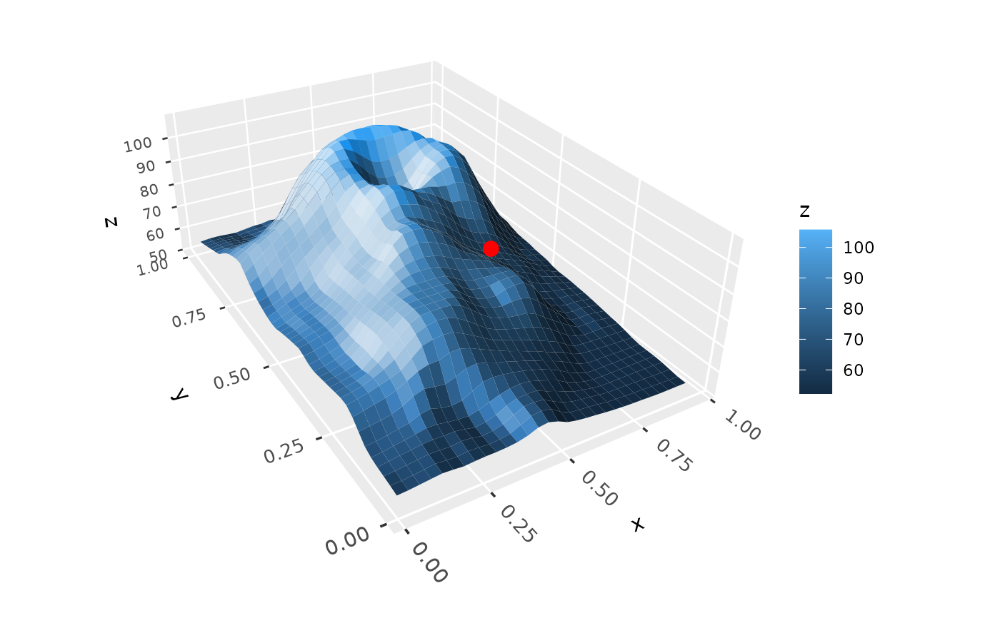
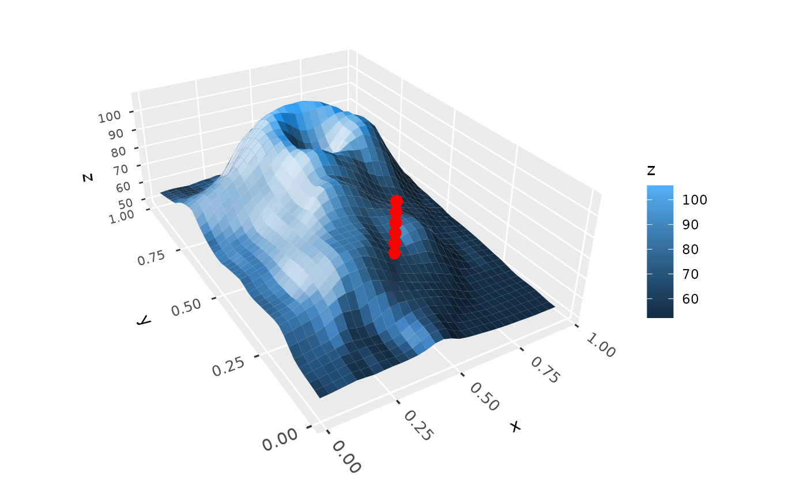
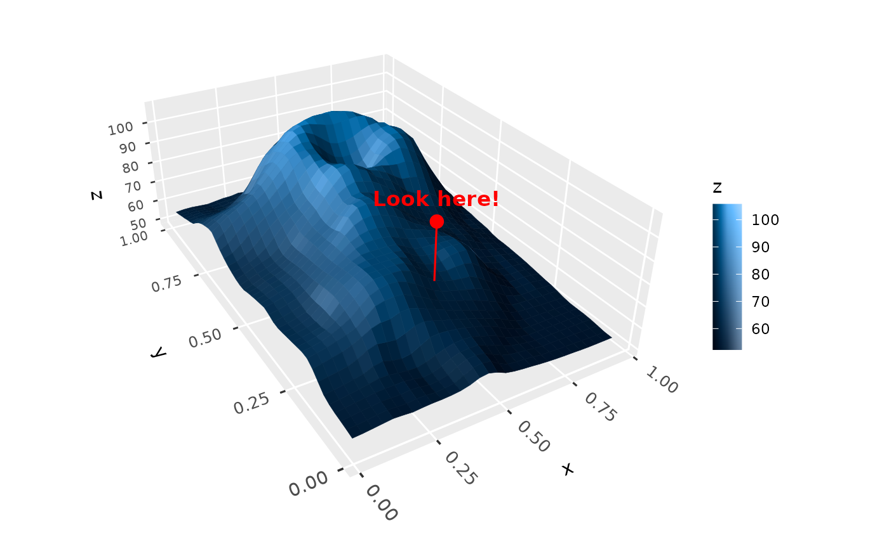
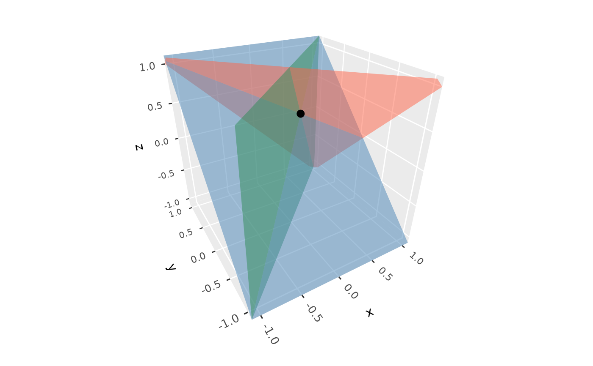
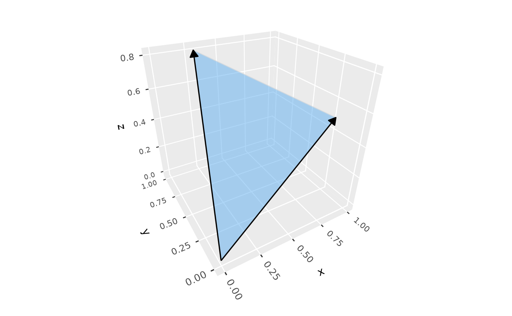
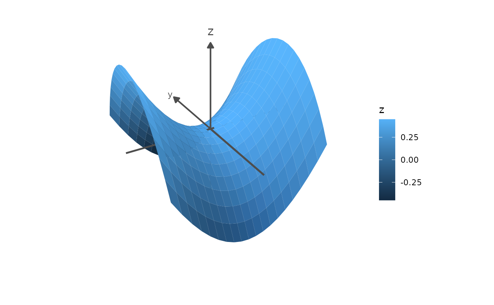
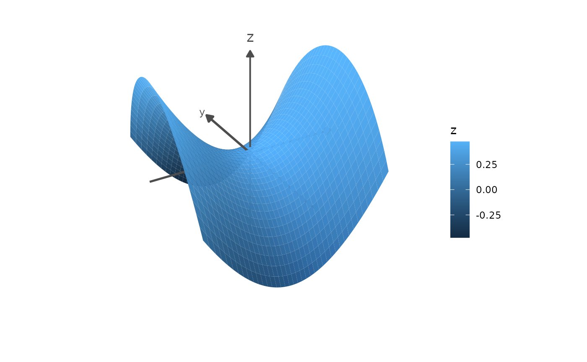

Defines fixed-position annotations to be embedded within a 3D layer.
Annotations are depth-sorted together with the primary geometry, unlike
ggplot2's annotate() which creates a separate layer.
Details
Parameters can be vectors to create multiple annotations of the same type
in one call, with scalar values recycled as needed (matching
ggplot2::annotate() behaviour).
Point annotations
Requires x, y, z. Optional styling: colour/color, fill, size,
shape, alpha, stroke.
Text annotations
Requires x, y, z, label. Optional styling: colour/color, size,
alpha, family, fontface, hjust, vjust, angle, lineheight.
By default, labels are depth-sorted with the rest of the layer, so geometry
in front of a label hides it. Set on_top = TRUE to draw labels on top of
everything else in the layer instead, keeping them legible wherever they
fall (e.g. labels in a diagram). on_top can be a vector, to set it per
label.
Segment annotations
Requires x, y, z, xend, yend, zend. Optional styling:
colour/color, linewidth, linetype, alpha, and arrow, an arrow
specification created by grid::arrow() that applies to every segment in
the call. Closed arrowheads are filled with the segment colour. When a
segment passes through a polygon and is split, its arrowheads stay at the
segment's original ends.
Polygon annotations
Requires x, y, z giving the polygon's vertices in order. To draw
several polygons in one call, give group, with one value per vertex;
vertices sharing a value form one polygon. Each polygon needs at least 3
vertices. Optional styling: fill (default "grey60"), alpha (default
0.5), colour/color for the outline (default "grey30"), linewidth,
linetype. Styling values apply per polygon, so they must have length 1 or
one value per polygon, in the order the groups first appear.
Like planes, polygons are lit from whichever side faces the viewer and are never removed by back-face culling. Unlike planes, they are placed in data space, so they expand the plot's axis ranges to fit.
Axes annotations
Draws a line along each of the x, y, and z axes through an origin given by
x, y, z (default 0), each spanning the panel's full range along its
axis, with an arrowhead and a label at its high end. Optional: labels
(a length-3 vector, default c("x", "y", "z"), or NULL for none),
arrow (default a closed 6pt arrowhead, or NULL for none), line styling
colour/color, linewidth, linetype, alpha, and label styling
size, family, fontface. Styling values can have length 3 to style
each axis separately.
Axes are built from the panel's limits when the plot is drawn, so unlike other annotations they don't expand the plot's axis ranges.
Line annotations
Draws infinite lines, clipped to the panel. Each line passes through the
point x, y, z (each defaulting to 0) in the direction dx, dy,
dz (each defaulting to 0, but not all zero). For example, the line
spanned by a vector v is annotate_3d("line", dx = v[1], dy = v[2], dz = v[3]), and the vertical line at x = 1, y = 2 is
annotate_3d("line", x = 1, y = 2, dz = 1). All values can be vectors to
draw several lines. Optional styling: colour/color, linewidth,
linetype, alpha.
Like axes and planes, lines are built from the panel's limits and don't expand the plot's axis ranges. A line that misses the panel entirely is skipped with a warning.
Plane annotations
Draws planes, clipped to the panel. Each call gives its planes in one of three forms:
xintercept,yintercept, orzintercept: planes perpendicular to an axis, e.g.yintercept = 2for the planey = 2. Only one of the three can be used per call.intercept,slope_x,slope_y: the planez = intercept + slope_x * x + slope_y * y, as from a linear model. Any of the three left out defaults to0.a,b,c,d: the general forma * x + b * y + c * z = d. Requiresa,b,c(not all zero);ddefaults to0.
Values can be vectors to draw several planes. In the general form, for
example, a, b, c can be the columns of a matrix A and d the
right-hand side of the linear system A x = d. To combine forms, use
separate annotate_3d() calls. Optional styling: fill (default "grey60"), alpha (default 0.5),
colour/color for the outline (default none), linewidth, linetype.
Like axes, planes are built from the panel's limits and don't expand the plot's axis ranges. They are lit like the layer's other polygons, from whichever side faces the viewer, and are never removed by back-face culling. A plane that misses the panel entirely is skipped with a warning.
Planes are split where they intersect each other or other polygons, and hide the elements they pass in front of (see sorting_methods).
Coordinates
Annotation coordinates are placed directly in the plot's (transformed)
scale space: with scale_x_log10(), for example, give x positions as
log10 values.
Examples
p <- ggplot(mountain, aes(x, y, z)) +
coord_3d(ratio = c(2, 3, 1),
light = light(mode = "hsl", direction = c(-1, 0, 0)))
# Basic point annotation
p + geom_surface_3d(
annotate = annotate_3d("point", x = .5, y = .25, z = 100,
color = "red", size = 3))

# Vectorized: multiple points in one call
p + geom_surface_3d(
annotate = annotate_3d("point", x = .5, y = .25, z = seq(50, 100, 5),
color = "red", size = 3))

# Multiple annotation types
p + geom_surface_3d(
annotate = list(
annotate_3d("point", x = .5, y = .25, z = 100,
color = "red", size = 3),
annotate_3d("text", x = .5, y = .25, z = 100,
color = "red", label = "Look here!",
vjust = -1, fontface = "bold"),
annotate_3d("segment", x = .5, y = .25, z = 100,
xend = .5, yend = .25, zend = 50,
color = "red", size = 3)))

# Planes of a linear system, meeting at its solution, and the line along
# which the first two planes intersect
A <- rbind(c(1, 1, 1), c(1, -1, 0), c(0, 1, -1))
ggplot(data.frame(x = 1/3, y = 1/3, z = 1/3), aes(x, y, z)) +
geom_point_3d(size = 3,
annotate = list(
annotate_3d("plane", a = A[, 1], b = A[, 2],
c = A[, 3], d = c(1, 0, 0),
fill = c("tomato", "seagreen", "steelblue")),
annotate_3d("line", x = 1/3, y = 1/3, z = 1/3,
dx = 1, dy = 1, dz = -2, linewidth = 1))) +
lims(x = c(-1, 1), y = c(-1, 1)) + zlim(-1, 1) +
coord_3d()

# A fitted regression plane, with a horizontal reference plane
fit <- lm(mpg ~ wt + hp, data = mtcars)
b <- coef(fit)
ggplot(mtcars, aes(wt, hp, mpg)) +
geom_point_3d(annotate = list(
annotate_3d("plane", intercept = b[1], slope_x = b["wt"], slope_y = b["hp"],
fill = "steelblue"),
annotate_3d("plane", zintercept = 20, alpha = 0.3))) +
coord_3d(yaw = 120)

# A polygon: the triangle spanned by two vectors and the origin
u <- c(1, 0.2, 0.5); v <- c(0.3, 1, 0.8)
ggplot(data.frame(x = 0, y = 0, z = 0, xend = c(u[1], v[1]),
yend = c(u[2], v[2]), zend = c(u[3], v[3])),
aes(x, y, z, xend = xend, yend = yend, zend = zend)) +
geom_segment_3d(arrow = arrow(type = "closed", length = unit(8, "pt")),
annotate = annotate_3d("polygon", x = c(0, u[1], v[1]),
y = c(0, u[2], v[2]), z = c(0, u[3], v[3]),
fill = "steelblue")) +
coord_3d()

# Axes through the origin, depth-sorted with a surface
ggplot() +
geom_function_3d(fun = function(x, y) (x^2 - y^2) / 2,
xlim = c(-1, 1), ylim = c(-1, 1), n = 20,
annotate = annotate_3d("axes", linewidth = 0.8)) +
coord_3d(panels = "none") +
theme_void()
